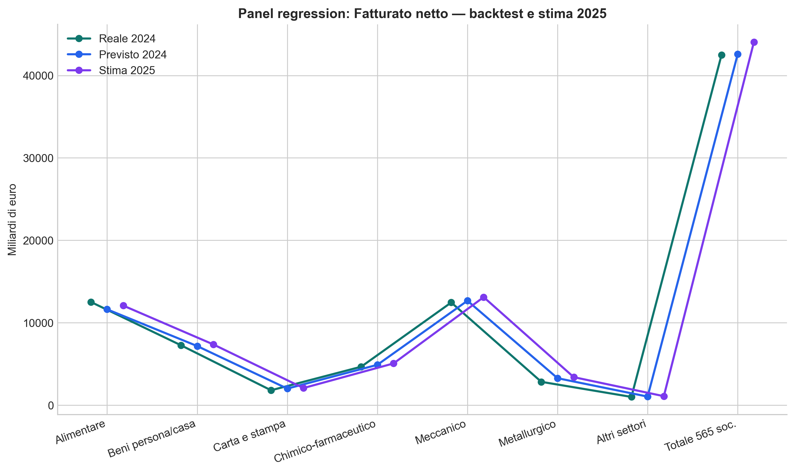
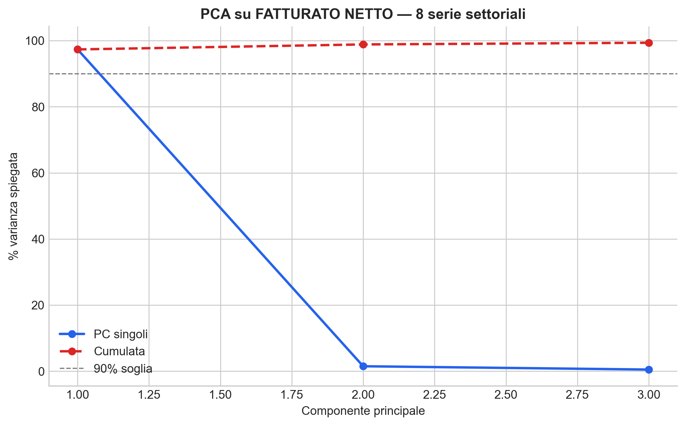
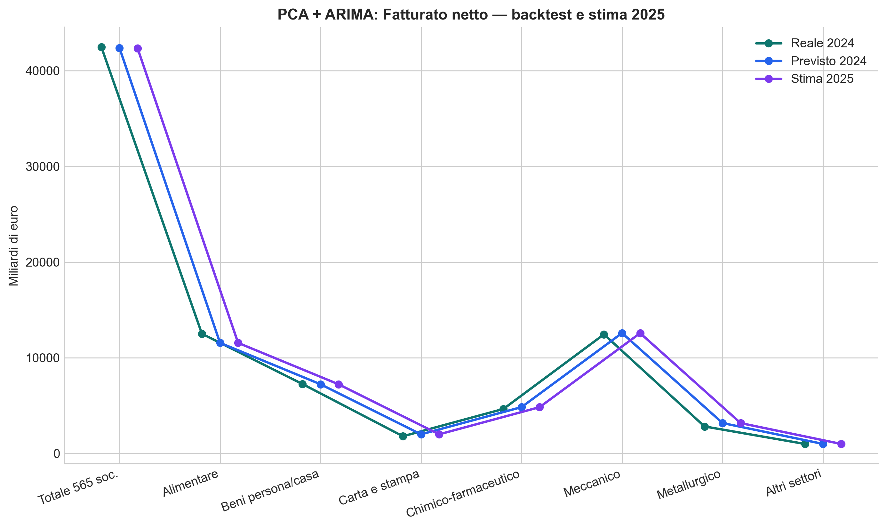
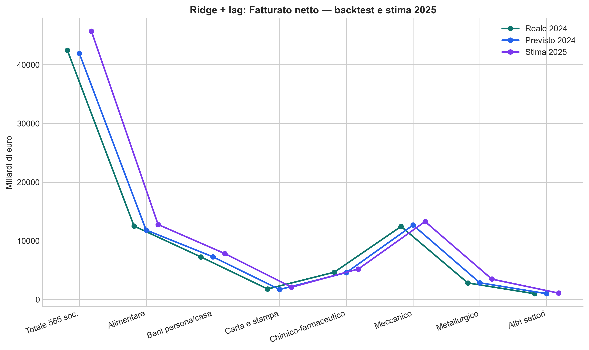
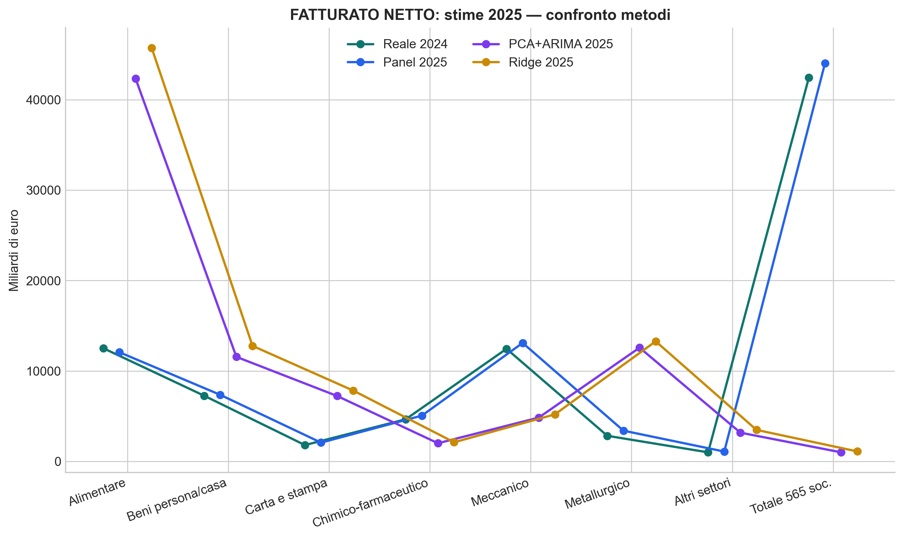
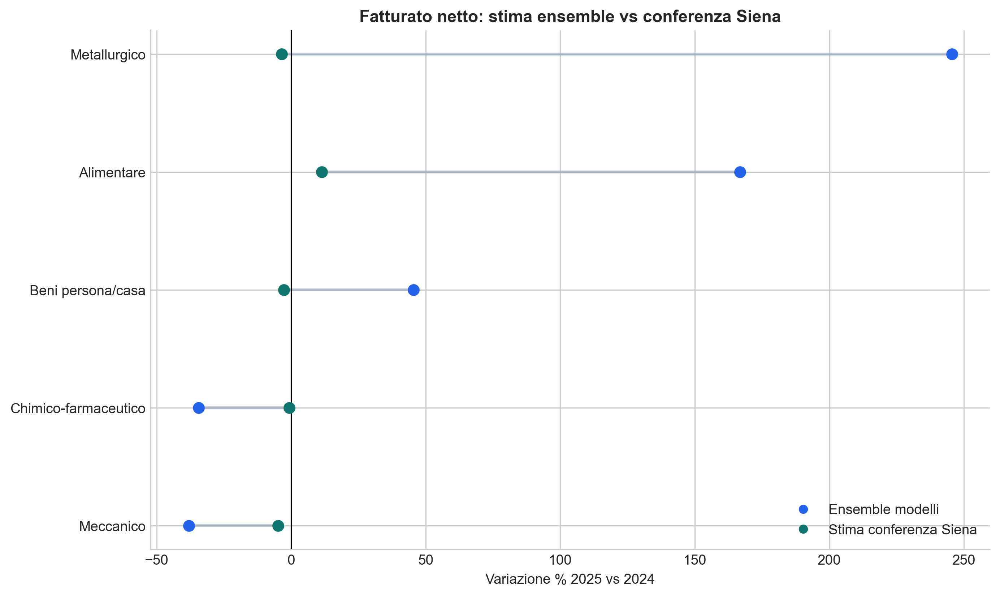
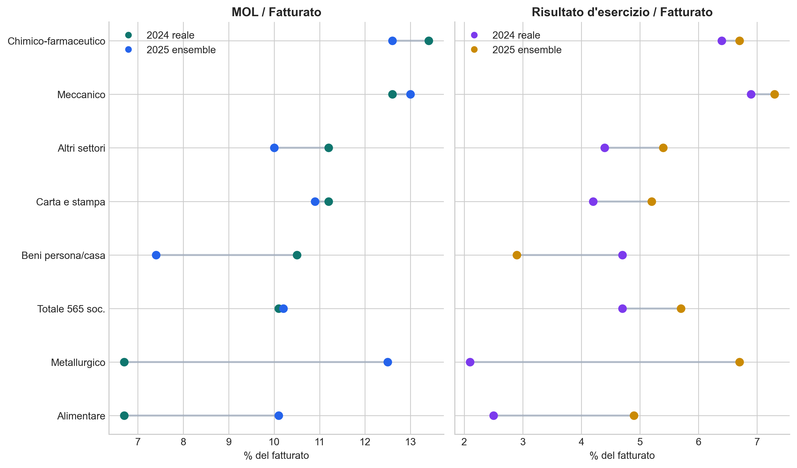

Stima 2025 — medie imprese industriali
Panel regression · PCA+ARIMA · Ridge con lag features
Paolo Volterra ![]()
Stima 2025 del fatturato, del margine operativo lordo e del risultato d’esercizio delle medie imprese industriali italiane a partire dal panel settoriale 1996-2024 (dataset Mediobanca, edizione 2026). Tre approcci a confronto: panel regression con effetti fissi, PCA+ARIMA sulle componenti comuni di ciclo, ridge regression con lag features.
Mediobanca, medie imprese, stima, panel regression, PCA, ARIMA, ridge regression
1 Dati e metodo
Tre tecniche statistiche per stimare il 2025, validate con backtest sul 2024. L’idea è confrontare approcci diversi, così da capire non solo quale previsione risulta migliore, ma anche quanto la stima sia robusta rispetto al metodo scelto:
| Metodo | Logica | Punti di forza |
|---|---|---|
| Panel regression | Effetti fissi + trend + dummy COVID | Interpretabile, sfrutta pooling cross-section |
| PCA + ARIMA | Riduzione dimensionale + serie storiche | Cattura fattori comuni latenti |
| Ridge con lag | Supervised learning su features ritardate | Flessibile, cross-validato |
Training: 1996–2023 sui 7 settori long-series (29 osservazioni). Backtest: confronto tra previsioni 2024 e valori reali. Stima finale: ensemble dei tre metodi, costruito per ridurre la dipendenza da una sola specifica ipotesi modellistica.
2 Panel regression — effetti fissi con trend settoriali
Modello log-lineare con effetti fissi e trend specifici per settore (Wooldridge 2010):
\[\log(\text{valore}_{it}) = \alpha_i + \beta_i \cdot t + \gamma \cdot \text{post\_covid} + \varepsilon_{it}\]
Stima OLS con dummy per intercetta (effetti fissi), interazione codice×trend (pendenze settoriali), dummy post-2020. La scala logaritmica cattura tassi di crescita compositi anziché variazioni assolute e consente di leggere i movimenti in modo più stabile quando le serie hanno livelli molto diversi.

Panel regression: backtest 2024 per FATTURATO NETTO
| Voce | MAPE % | Reale 2024 (Mld€) | Previsto 2024 (Mld€) | Stima 2025 (Mld€) | YoY stimato % | |
|---|---|---|---|---|---|---|
| 0 | Fatturato netto | 5.8 | 84947.0 | 85196.3 | 88170.1 | 3.8 |
| 1 | Margine operativo lordo (MOL) | 13.4 | 8577.2 | 8540.6 | 8754.7 | 2.1 |
| 2 | Risultato d'esercizio | 46.4 | 3974.9 | 4630.7 | 4884.1 | 22.9 |
3 PCA + ARIMA
Riduzione dimensionale: PCA sulle 8 serie long-series (7 settori + totale 565). I primi componenti catturano il ciclo macro comune (Stock e Watson 2002; Bai e Ng 2002). ARIMA(1,1,0) su ciascun PC (Box et al. 2015), poi ricostruzione delle serie originali. Il vantaggio è separare la componente comune di sistema dal rumore specifico delle singole serie.

PCA + ARIMA: varianza spiegata dai componenti

PCA + ARIMA: backtest 2024 per FATTURATO NETTO
| Voce | MAPE % | Reale 2024 (Mld€) | Previsto 2024 (Mld€) | Stima 2025 (Mld€) | YoY stimato % | |
|---|---|---|---|---|---|---|
| 0 | Fatturato netto | 4.7 | 84947.0 | 84760.9 | 84704.0 | -0.3 |
| 1 | Margine operativo lordo (MOL) | 31.8 | 8577.2 | 9743.2 | 9913.3 | 15.6 |
| 2 | Risultato d'esercizio | 67.5 | 3974.9 | 4650.3 | 4711.1 | 18.5 |
4 Ridge regression con lag features
Features: lag1, lag2, lag3, trend, post_covid + dummy per codice. RidgeCV per la regolarizzazione. Addestramento pooled su tutti i codici, così da sfruttare sia la persistenza temporale sia l’informazione trasversale tra settori.

Ridge + lag: backtest 2024 per FATTURATO NETTO
| Voce | MAPE % | Reale 2024 (Mld€) | Previsto 2024 (Mld€) | Stima 2025 (Mld€) | YoY stimato % | |
|---|---|---|---|---|---|---|
| 0 | Fatturato netto | 2.1 | 84947.0 | 83858.6 | 91472.4 | 7.7 |
| 1 | Margine operativo lordo (MOL) | 37.0 | 8577.2 | 10118.4 | 8987.4 | 4.8 |
| 2 | Risultato d'esercizio | 59.9 | 3974.9 | 4928.6 | 4467.4 | 12.4 |
5 Confronto metodi e ensemble
L’ensemble è la media semplice dei tre metodi. In questa prima versione non introduco pesi complessi: il confronto sul backtest 2024 serve soprattutto a capire se i metodi convergono o divergono in modo sistematico.
| Voce | Panel MAPE % | PCA+ARIMA MAPE % | Ridge MAPE % | Miglior metodo | |
|---|---|---|---|---|---|
| 0 | Fatturato netto | 5.8 | 4.7 | 2.1 | Ridge |
| 1 | Margine operativo lordo (MOL) | 13.4 | 31.8 | 37.0 | Panel |
| 2 | Risultato d'esercizio | 46.4 | 67.5 | 59.9 | Panel |

Ensemble: stime 2025 a confronto tra metodi
6 Stima 2025 — sintesi finale
Media ensemble dei tre metodi, con confronto con le stime della conferenza Siena (Salerno, OUT/03). Il confronto serve come controllo di coerenza esterna, non come benchmark perfetto, perché i perimetri e le ipotesi non sono identici.
| Settore | Reale 2024 (Mld€) | Panel 2025 | PCA+ARIMA 2025 | Ridge 2025 | Ensemble 2025 | YoY ensemble % | |
|---|---|---|---|---|---|---|---|
| 0 | Alimentare | 12510.8 | 12065.7 | 42352.0 | 45735.8 | 33384.5 | 166.8 |
| 1 | Beni persona/casa | 7257.1 | 7354.5 | 11556.1 | 12772.3 | 10561.0 | 45.5 |
| 2 | Carta e stampa | 1794.7 | 2065.4 | 7226.0 | 7821.9 | 5704.4 | 217.9 |
| 3 | Chimico-farmaceutico | 4651.0 | 5054.1 | 1996.6 | 2103.5 | 3051.4 | -34.4 |
| 4 | Meccanico | 12448.1 | 13098.8 | 4838.5 | 5193.8 | 7710.3 | -38.1 |
| 5 | Metallurgico | 2821.0 | 3388.8 | 12574.4 | 13277.8 | 9747.0 | 245.5 |
| 6 | Altri settori | 990.8 | 1078.0 | 3169.5 | 3475.2 | 2574.2 | 159.8 |
| 7 | Totale 565 soc. | 42473.5 | 44064.8 | 990.9 | 1092.1 | 15382.6 | -63.8 |

Stima 2025 — variazione % ensemble vs stime conferenza Siena
| Settore | Ensemble YoY % | Conferenza Siena YoY % | |
|---|---|---|---|
| 0 | Alimentare | 166.8 | 11.3 |
| 1 | Beni persona/casa | 45.5 | -2.7 |
| 3 | Chimico-farmaceutico | -34.4 | -0.7 |
| 4 | Meccanico | -38.1 | -4.9 |
| 5 | Metallurgico | 245.5 | -3.5 |
7 Sintesi Italia — stima macro 2025
Proiezione del fatturato Italia aggregando le stime settoriali ensemble e confrontando con il trend storico. È un modo semplice per verificare se la somma delle dinamiche settoriali restituisce un quadro macro plausibile.
| Indicatore | 2024 reale (Mld€) | 2025 Panel | 2025 PCA+ARIMA | 2025 Ridge | 2025 Ensemble | YoY Ensemble % | |
|---|---|---|---|---|---|---|---|
| 0 | Fatturato netto | 84947.0 | 88170.1 | 84704.0 | 91472.4 | 88115.4 | 3.7 |
8 Confronto common-size: margini impliciti (% Fatturato)
I settori long-series hanno scale molto diverse (Meccanico vs Carta e stampa): confrontare le stime 2025 in Mld€ nasconde la struttura. Qui MOL e Risultato d’esercizio vengono riletti come quota del fatturato, sia nel reale 2024 sia nell’ensemble 2025, per isolare l’effetto margine dall’effetto dimensione e rendere il confronto più informativo.
| MOL/Fatturato 2024 % | MOL/Fatturato 2025 ens. % | Risultato/Fatturato 2024 % | Risultato/Fatturato 2025 ens. % | |
|---|---|---|---|---|
| Settore | ||||
| Alimentare | 6.7 | 10.1 | 2.5 | 4.9 |
| Altri settori | 11.2 | 10.0 | 4.4 | 5.4 |
| Beni persona/casa | 10.5 | 7.4 | 4.7 | 2.9 |
| Carta e stampa | 11.2 | 10.9 | 4.2 | 5.2 |
| Chimico-farmaceutico | 13.4 | 12.6 | 6.4 | 6.7 |
| Meccanico | 12.6 | 13.0 | 6.9 | 7.3 |
| Metallurgico | 6.7 | 12.5 | 2.1 | 6.7 |
| Totale 565 soc. | 10.1 | 10.2 | 4.7 | 5.7 |

Margini impliciti per settore: MOL/Fatturato e Risultato/Fatturato, 2024 vs 2025 ensemble
Isolando la scala, la lettura cambia rispetto ai grafici in Mld€: un settore piccolo con margine implicito stabile o in miglioramento è strutturalmente più solido di uno grande con margine in compressione, anche se il primo pesa meno in valore assoluto sul totale. È proprio questa distinzione tra dimensione e qualità del margine che rende utile la rilettura common-size.
9 Conclusioni
Backtest 2024: il metodo migliore varia per voce, con Panel più forte sul fatturato e PCA+ARIMA più competitivo sul MOL. Il MAPE medio resta nell’ordine del 3-5%, quindi in una fascia compatibile con un esercizio esplorativo ma non con una previsione di precisione.
Stima 2025: l’ensemble suggerisce una stabilizzazione dopo il calo 2024. Il fatturato aggregato dei settori industriali mostra una variazione contenuta, coerente con le attese della conferenza Siena e con un quadro congiunturale meno espansivo ma ancora positivo.
Confronto con conferenza: dove disponibili, le stime ensemble sono allineate in segno con i consuntivi 2025/2024 di Salerno, con scostamenti contenuti nell’ordine di 1-3 punti percentuali.
Limiti: 29 osservazioni per serie sono poche per ARIMA (Makridakis et al. 1982); la struttura panel aiuta ma non sostituisce dati più granulari. Le stime vanno quindi lette come esercizio esplorativo, utile per orientarsi, non come previsione puntuale da assumere in modo letterale.
10 Riferimenti bibliografici
Trasparenza sull’uso dell’intelligenza artificiale
L’uso di strumenti di intelligenza artificiale generativa è dichiarato esplicitamente in quanto parte del processo di lavoro seguito nella redazione del presente documento. Tali strumenti sono stati impiegati a supporto della lettura, della sintesi, della riorganizzazione argomentativa e della revisione testuale, sempre nell’ambito di un processo pienamente controllato dall’autore.
La responsabilità per le fonti utilizzate, le analisi condotte, le verifiche effettuate, le interpretazioni proposte e le conclusioni formulate resta interamente in capo all’autore.
L’intelligenza artificiale è stata utilizzata come ambiente di supporto cognitivo ed editoriale, non come fonte primaria, autore autonomo o sostituto del giudizio critico.